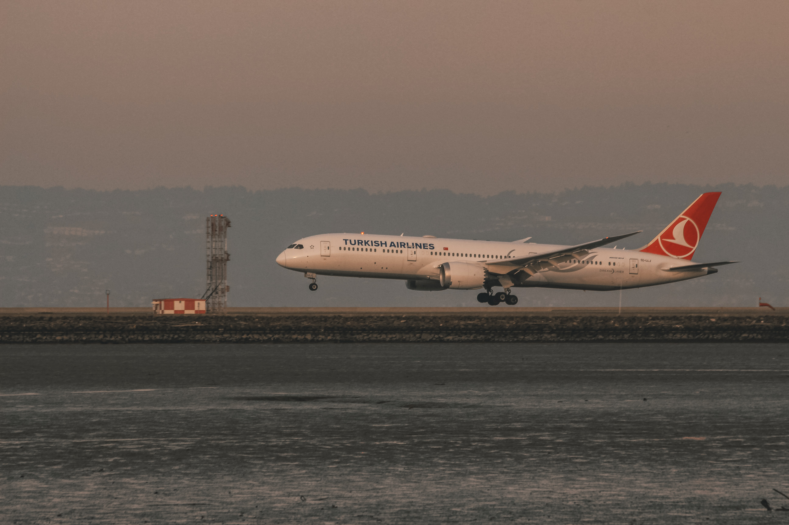

A flying guide for nervous travelers
Safety
30 March 2021
Whether it's your first time or your fiftieth time, getting on an airplane can understandably make you nervous. By examining the nature of these fears, the risks of flying itself, and what you might expect on your flight, we can hopefully make flying a little less terrible.
The fear of flying
The American Psychiatric Association classifies fear of flying (also called Flying Phobia or aviophobia) as a Specific Phobia. That is, it should be treated and approached from a medical stance, and not as something to just "get over it". As with any medical matters, speak to a doctor about your concerns if you see fit. They will be able to give you the best advice and/or treatment.
Passengers board an Air China Airbus A350. Photo by Markus Winkler on Unsplash
An Emirates A380 taking off at Dusseldorf Airport. Photo by Tim Dennert on Unsplash
When certain stimuli cause someone to perceive a threat, they experience a trigger. There are many different triggers that might cause anxiety exacerbation in airplanes. To name a few: being in an airport, boarding the aircraft, takeoff and landing, unexpected movements, etc. Triggers cause real physiological responses, such as increased heart rate and breathing rate, nausea, sweating, etc. For some people, the stimuli have to be quite strong to elicit a response, like an extremely bumpy flight. For others, even a normal takeoff can trigger a full on panic attack.
Psychology experts generally agree that avoiding situations that cause fear will make the response stronger the next time. In fact, facing your fears can physiologically change your brain, making the situation less anxiety-inducing the next time. However, for people with a severe fear of flying, it might be a little too much to just get on a plane. Many airlines have created programs for nervous flyers to help ease them into flying before they actually go on their flight, some of which have shown tremendous success even though they were just internet modules.
Understanding the risks
Flying is unequivocally safe. The chances of getting in a plane crash are 1 in 11 million - almost 4,000 times less likely than being struck by lightning during your life. Even then, the survival rates of those who are involved in a plane crash are over 95%. For reference, the fatal accident rate for motor vehicles is 1 in 102, which means you are taking an astronomically greater risk by commuting to the airport than actually flying.
This is for good reason. The aviation industry is designed around safety, especially in this day and age. With flight having been so widespread for decades, industry professionals have learned from mistakes, done immense research, and created standardized best practices to ensure the maximum safety of every flight. And for each flight, there are several professionals, failsafes, and chances to catch any potential mistakes and mishaps before they happen.
What you can expect on your flight, and some helpful tips
When you're at the gate waiting to board your flight, there really is no need to line up until your boarding group is called. I promise that the plane will not leave you behind. Find your assigned seat (unless you're flying Southwest) and sit down. Try to have everything you need prepared so you don't need to unpack your carry-on bag in the middle of the aisle when people are trying to get past.
Have a seat and take a deep breath. If possible, consider choosing a window seat so you can see what's happening outside, which can provide you with visual cues to explain the physical sensations you feel. One of the causes of flying phobia is that the cabin of the aircraft is a non-inertial reference frame. Because the whole plane is moving and accelerating, you might feel forces and sensations that aren't apparent by referencing something inside the aircraft. For example, the airplane might be turning, and you'll feel heavier in your seat. If you can't see outside the window, it can be frightening.
Consider watching a movie or listening to music during flight, but inflight entertainment isn't available on all airlines/aircraft. Photo by Suhyeon Choi on Unsplash
The strongest acceleration you will experience is during takeoff and landing, and even then, the movements are not violent or harsh. You will be pushed into the back of your seat, and once the aircraft reaches a sufficient speed, the nose will lift and the aircraft will climb. For a Boeing 737, the typical angle of climb is about 15 degrees above horizontal. It can feel steep, but everything is fine. It is exceedingly unlikely that a commercial airliner will stall or otherwise perform any extreme maneuvers, and pilots are trained to avoid stalls as much as possible. After a few minutes, the airplane will climb at a more gentle rate. If you can, try to take a nap, watch a movie, or do something that will relax you. Don't consume any content related to airplanes, as it might be a trigger.
It is probably best to avoid consuming alcohol, but the effects are different for each person. For some people, drinks can make them feel sleepy, but it can also make you belligerent, sloppy, or exacerbate your anxiety. Also consider that alcohol is stronger in the air than on the ground because of the decreased pressure. Caffeine can make you jittery and further increase your heart rate, which is not ideal. Both alcohol and caffeine are diuretics, which will make you need to use the restroom. Instead, drink water to stay hydrated.
A Turkish Airlines Boeing 787 landing in San Francisco. Thousands of aircraft takeoff and land around the world each day, and incidents are exceedingly rare. Photo by David Barajas on Unsplash
If you're flying during bad weather, don't worry. The flight dispatchers and pilots would have cancelled the flight if the weather was bad enough to be unsafe, and in the air, pilots can fly around or over any weather. At cruising altitude, you will be above any bad weather conditions. In the event that the plane is struck by lightning (which is more common than you might think), everything is still ok. Because the aircraft fuselage is made of aluminum, a conducting material, it acts as a Faraday cage, which means the net electric field inside the aircraft is zero. The lightning will simply pass through the airframe.
Turbulence is another cause of flight anxiety. It is caused when the air the plane is flying through is not totally smooth, due to clouds, wind, other aircraft, etc. You will also experience turbulence when flying over mountain ranges. Overall, there is nothing to worry about when turbulence happens. The plane will not fall apart, nor will it fall out of the sky. The main concern with turbulence is that unsecured items and people will be thrown off their feet during bumps, which is why you are asked to fasten your seatbelt. As long as the plane is still in the air, things will be fine.
Sit back, relax, and enjoy your flight. Everything will be ok. Image: a British Airways Boeing 747-400 at Chicago O'Hare. Photo by Patrick Campanale on Unsplash
Mechanical failures are also exceedingly unlikely. Even if one engine fails, aircraft can fly quite a long distance on only a single engine. If both engines fail, it will depend on how much altitude the aircraft has, but even then, the plane will not crash to the ground immediately. The aircraft essentially becomes a very bad glider, and you will likely walk out alive.
When the aircraft begins to descend, you will feel light in your seat. You are not falling out of the sky; the aircraft will descend at a reasonable rate, and hey! Your flight is almost over. During the descent, try not to look at the ground if the height makes you nervous, but do keep the window open for the aforementioned reason. Each landing is different in terms of how hard you touch the ground, but there is generally no reason to worry. When the plane lands, if you can see the wing outside your window, the ground spoilers will deploy on the landing roll. They are a series of panels that will lift and expose some of the hydraulics in the wing, but it's supposed to happen and there's nothing to worry about.
Congrats! You got through the flight, and the next one will probably be better than the last.
Disclaimer: This article is not intended as medical advice, diagnosis, or treatment, and should not be treated as such. Always contact your medical professionals with any questions or concerns.
References
- Campos, Daniel et al. "Efficacy of an internet-based exposure treatment for flying phobia (NO-FEAR Airlines) with and without therapist guidance: a randomized controlled trial." BMC psychiatry vol. 19,1 86. 6 Mar. 2019, doi:10.1186/s12888-019-2060-4
- Clark, Gavin I, and Adam J Rock. "Processes Contributing to the Maintenance of Flying Phobia: A Narrative Review." Frontiers in psychology vol. 7 754. 1 Jun. 2016, doi:10.3389/fpsyg.2016.00754
- Haas, Susan Biali. "Help for Anxiety: Facing Your Fears Will Heal Your Brain". Psychology Today, 2018. https://www.psychologytoday.com/us/blog/prescriptions-life/201808/help-anxiety-facing-your-fears-will-heal-your-brain
- Goldenberg, Sara. "How likely are you to die on a plane? These statistics may ease your fears". Cleveland 19 News, 2018. https://www.cleveland19.com/story/38100144/how-likely-are-you-to-die-on-a-plane-these-statistics-may-ease-your-fears/
- Kim, Simon et al. "Use of skills learned in CBT for fear of flying: managing flying anxiety after September 11th." Journal of anxiety disorders vol. 22,2 (2008): 301-9. doi:10.1016/j.janxdis.2007.02.006
- Wakefield, Ingrid and Dubuque, Chris. "Exceeding Tire Speed Rating During Takeoff". Boeing Aero Magazine 2009 2.4. https://www.boeing.com/commercial/aeromagazine/articles/qtr_02_09/pdfs/AERO_Q209_article04.pdf